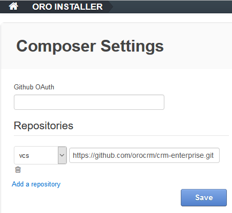
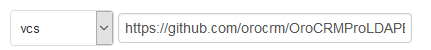
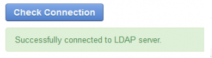
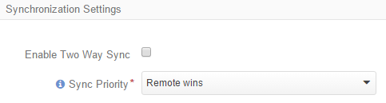
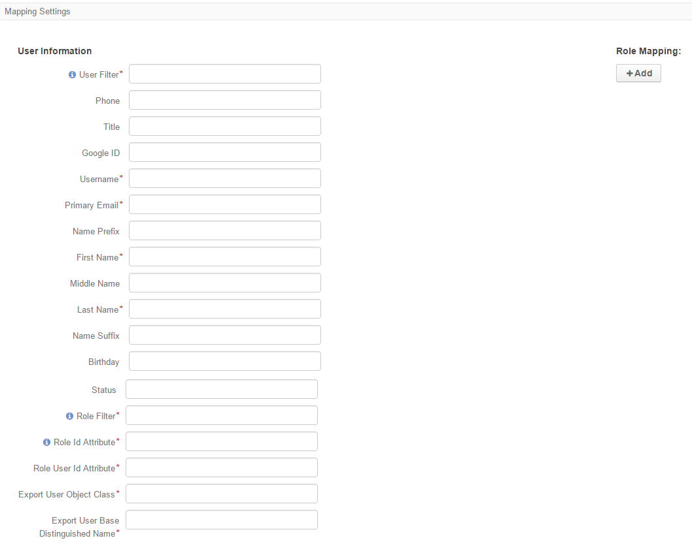
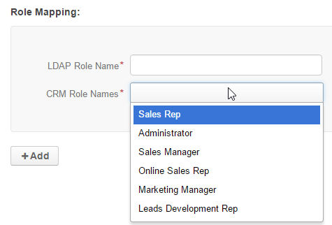

Single sign-on capability (the ability for users to use the same login credentials for all corporate applications) is particularly important for efficiency and performance in large-scale companies. The LDAP Integration feature available in Oro Enterprise Edition supports this capability.
LDAP is a Lightweight Directory Access Protocol, an open-source and vendor-neutral protocol that is commonly used to share user-related information in the network.
The integration can also significantly simplify the initial setup of Oro, as it allows businesses to upload existing user records into Oro and map LDAP user role identifiers to Oro roles.
In order to enable this functionality you need to perform the steps described in the following sections.
Since the extension is only available for Enterprise Edition users, you cannot download it directly from the website.
Go to System > Package Manager
Click the icon in the top right corner.
The Composer Settings page will emerge.

Click the Add a repository button.
Add a vcs repository https://github.com/orocrm/OroCRMProLDAPBundle.git

Click the Back to the Installed Packages link
Fill the Package Name field in the top left part of the page with “oro/crm_pro_ldap_bundle”, and click Install.
Proceed with the installation as described in the Extensions and Package Manager Guide
These settings must be defined to enable the synchronization in Oro application:
| Name* | The name used to refer to the integration in Oro application. It is better to keep the name reasonable. |
| Hostname* | The hostname of the target LDAP server. |
| Port* | The port of the LDAP server. |
| Encryption | Select the encryption used by the LDAP server. The possible values are:
|
| Base Distinguished Name* | The default base distinguished name used by the LDAP server for search (e.g. to search for LDAP accounts). This option is required for most account related operations and should indicate the distinguished name under which accounts are located. |
| Default Business Unit Owner* | A business unit that will by default own the newly imported users in Oro application (members of this unit can manage the user records subject to the role settings). If you want to assign users to multiple business units, this can be done after the synchronization is complete - another option is to create separate integrations for every default business unit. |
Along with that, the following values can be defined, if they are required by the target LDAP server:
| Username | The default username of the LDAP server. Must be given in the Distinguished Name form, if the LDAP server requires a Distinguished Name to bind and binding should be possible with simple usernames. |
| Password | The default password of the LDAP server used with the username above. |
| Account Domain Name | The fully qualified domain name (FQDN) of the domain, for which the target LDAP server is an authority. |
| Short Account Domain Name | The short name of the domain, for which the target LDAP server is an authority. This is usually used to specify the NetBIOS domain name for Windows networks but may also be used by non-AD servers. |
Once all the necessary settings have been defined, click the Check Connection button. If everything is correct, the success message will appear.
Use the Synchronization Settings section to enable/disable two-way synchronization.
Check the Enable Two Way Sync box, if you want to upload the user-related data both from the LDAP server to Oro application and back. If the box is unchecked, data from the LDAP server will be loaded in to Oro application, but changes performed in Oro application will not be synchronized with the target server.
If two-way synchronization is enabled, define the priority used for conflict resolution (e.g. if the same user details were edited from both Oro application and the target LDAP server):
Use the Mapping Settings section to define how the user attributes and role names of Oro application and the target LDAP server will be mapped to each other.
The following values must be defined:
| User Filter* | The filter used to search for users in the target LDAP server. (e.g. objectClass=inetOrgPerson) |
| Username* | An attribute of the LDAP server that corresponds to Oro’s user name (e.g. sn). |
| Primary Email* | An attribute of the LDAP server that corresponds to Oro’s Primary Email (e.g. cn). |
| First Name* | An attribute of the LDAP server that corresponds to Oro’s First Name (e.g. givenName). |
| Last Name* | An attribute of the LDAP server that corresponds to Oro’s Last Name (e.g. displayName). |
| Role Filter* | The filter used to search for roles in the target LDAP server. (e.g. objectClass=simpleSecurityObject) |
| Role Id Attribute* | An attribute of the LDAP server that corresponds to Oro’s Role Id (e.g. cn). |
| Role User Id Attribute* | An attribute of the LDAP server that corresponds to Oro’s attribute that binds a user to a role (e.g. roleOccupant). |
| Export User Object Class* | The class of the LDAP server objects that correspond to Oro’s user profiles (e.g. inetOrgPerson). |
| Export User Base Distinguished Name* | Distinuguished name of the directory that contains LDAP server objects that correspond to Oro’s user profiles (e.g. dc=orocrm,dc=com). |
Click the +Add button under the Role Mapping section to map roles of Oro application and the target LDAP server.
Define the role name in the target LDAP server and choose the role in Oro application to map.
After the integration has been established, user profiles will be imported to Oro application and users will be able to use their usual credentials to log-in to Oro application.
Note
Using LDAP integration does not prevent you from creating user profiles in Oro application manually; they will work as usual, and won’t be imported back to your LDAP server.
The system administrators will be able to tell if a user has been added via LDAP integration, as their profile will contain the LDAP Distinguished Names value, which will only be visible to users who have permission to manage LDAP integrations.
The ability to quickly import users via LDAP integration allows organizations to become more efficient with their time and spend more energy growing their business.